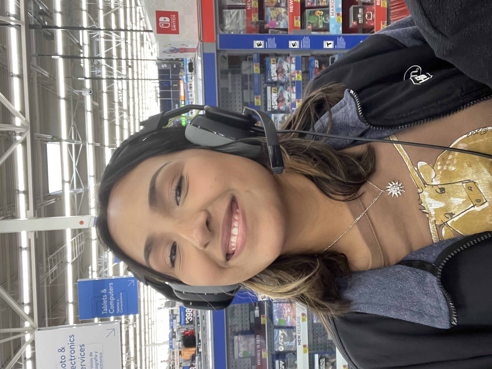

Music and Self-Expression
Why Music Matters to Me

Music has always been important to me because it can express emotions that are difficult to explain in everyday conversation. A song can make a feeling clearer, bring back a memory, or help someone feel understood. I like music that feels intentional, emotional, and connected to identity.
Some artists I enjoy include Paramore, Rosalía, BTS, Sade, Kendrick Lamar, PinkPantheress, and King Krule. I admire artists who have a strong sense of style, sound, and personality. Their work feels meaningful because it often reflects vulnerability, culture, confidence, heartbreak, growth, or individuality.
I also connect music to psychology because music affects mood, memory, and personal identity. People often use songs to understand themselves or mark different stages of their lives. This is one reason I enjoy thinking about music as more than entertainment.
Music can say something honest without always saying it directly.
Artists I Listen To
- Paramore
- Rosalía
- BTS
- Sade
- Kendrick Lamar
- PinkPantheress
- King Krule
Read more about music and culture at NPR Music.